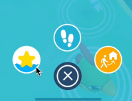
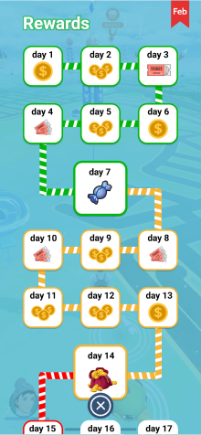
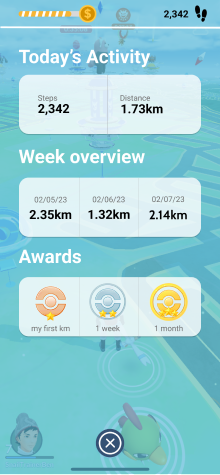
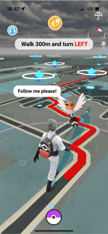

We are user centric and have designed precise user processes
on Figma, from the game to various functional pages, ensuring
that users can easily understand and navigate the game. On the
basis of the original game, we have introduced extended mode,
which allows players to switch game modes at any time through
the switch button. This provides players with more options,
allowing them to adjust the gaming experience according to
their interests and needs.
My main contribution lies in designing three game systems
that combine game mechanisms to help elderly people achieve
healthier lifestyle habits in our expanded version. At the
same time, our design will also be more tailored to the usage
habits and cognition of elderly users, actively optimizing
this model from their perspective.

Players will receive a specific health goal every month,
such as walking distance, exercise time, or dietary planning.
Completing tasks will earn rewards that can be used in the game,
increasing the correlation between the game and health.
In addition, tasks can also motivate players to actively
participate in daily exercise and health management.

By launching a daily step count system, real-life
walking can be transformed into virtual revenue
within the game. Players can accumulate steps through movement,
which will be converted into virtual currency or props within the game.
This not only encourages players' daily exercise, but also increases
the playability of the game.

In order to pay attention to the needs of elderly
players, we have designed an automatic pathfinding
home system. When players feel tired or inconvenient,
they can activate the home system, and the game will
automatically plan the shortest home route for them.

In addition to the health system, we also focused
on the mental health and interpersonal relationships
of elderly players. We will introduce social functions
in the game, allowing players to team up, communicate,
and collaborate with other players, enhancing social
interaction. In addition, we regularly organize online
and offline social activities to provide players with a
platform to make new friends and share gaming experiences.
The cultivation of such interpersonal relationships is
crucial for the mental health of elderly players and also
makes games a bridge for social interaction. However, due
to time and energy constraints, we did not actually design
this part of the content. We hope to have the opportunity
to supplement our development experience in this area in
the future.
Visit Prototype
 More Projects
More Projects